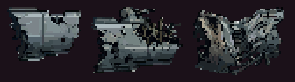
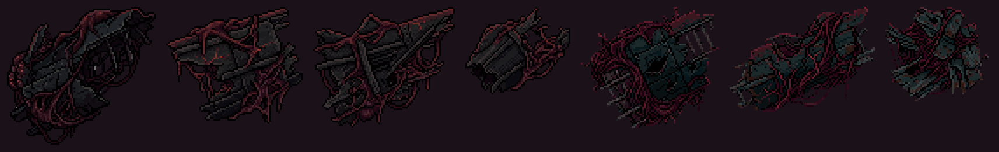
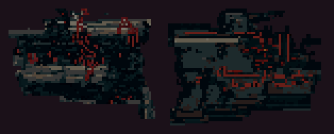
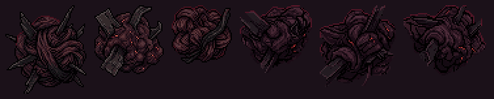
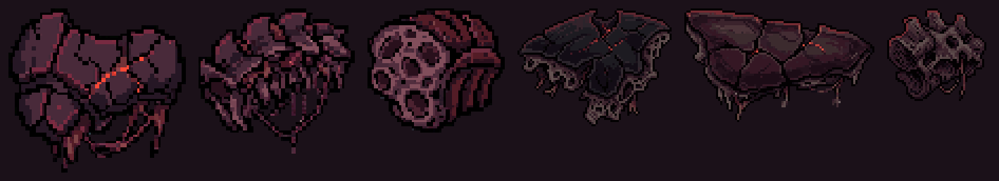

O destroço da F4 · item 8
17/10/2026 · Polimento, bloco C. Dentro do Leviatã o destroço é "o que ele engoliu" (o cabeçalho do roteiro da F4), mas usa a arte da F2: placas de nave cinza-claras, a coisa mais clara da fase, ampliadas até 1,6× (o item 7). A variante da F4 nasce no tamanho em que aparece e entra em escala 1, então resolve os itens 7 e 8 de uma vez na F4.
Os GIFs são a F4 de verdade, com o destroço trocado só na memória. ⚠️ Para ter o que olhar em 5 segundos, empurrei um destroço a mais no corredor a cada ~1,1s: a densidade dos GIFs é exagerada, e no jogo eles vêm na cadência do roteiro. A caixa de colisão continua em 70% da arte, como hoje.
Instalado no jogo (17/10): código real, nada conduzido à mão
Pela sua escolha: "o casco engolido e suas variações ficaram ótimas, pode usar. Mas na mesma proporção ou até menos um pouco do que existe hoje… Os ossos e coágulos ficaram muito bons também, podem ser usados mais sombreados para flutuar nos layers de trás". E a regra que veio junto: "os assets que vão para os layers de trás precisam diminuir de tamanho, para parecerem distantes".
- O destroço da F4 é o casco engolido: as 7 peças, inteiras e reduzidas por 2, em escala 1 (
public/sprites/f4-engolido.png). Entra como pele da F4 noDebrisSystem(STAGE_4_SKIN); a F2 continua com a arte cinza de sempre. - Menos destroço, e só destroço: ele caiu para 2/3 do que era. Na câmara A, passou de um a cada 4,4s para um a cada 6,6s; da câmara do golfinho até o fim do duto, de 7,8s para 11,7s. Os sensores e as minas continuam exatamente na cadência de antes (a conta está no roteiro,
StageDirector.ts, t=15,5 e t=50,5). Os GIFs dos conceitos, mais abaixo, tinham densidade exagerada de propósito; estes de cima são a cadência real. - A deriva (
src/systems/DerivaF4.ts, atlasf4-deriva.png): ossos e coágulos boiando ATRÁS da borda, em dois planos de distância. Nenhuma peça inteira entra, porque as inteiras têm o tamanho do destroço jogável. O plano de 1/2 anda a 0,55× do mundo, com sombra média. O de 1/3 é menor, mais lento (0,42×), mais escuro e mais fundo. Os dois ficam entre a costela distante e a próxima, girando devagar. Somem na arena junto com o resto do cenário. - ⚠️ Corrigido no caminho: na 1ª versão a deriva nascia em qualquer altura da tela e caía atrás das mesas e da faixa, onde não aparecia. Agora o centro nasce dentro do corredor.


tint dos planos.Conferido: tsc limpo. Na probe-f4-frente, que agora também confere o destroço e a deriva, deu "tudo certo": todo destroço da F4 nasce como casco engolido em escala 1, a deriva só usa peças reduzidas, e nada da deriva nasce nem fica visível na arena. probe-stage4, probe-f4-esfincter e probe-elites-f4 passaram. A probe-stage2 roda inteira; a F2 não foi tocada.
As peças



edit-image sobre as três artes de hoje). Só 2 de 9 saíram mantendo o casco, e puxam para o azul-petróleo.

No jogo entra cada peça inteira e também reduzida por 2 (reduzir pode, aumentar nunca). Somando as duas, o tamanho médio (55×47px) fica perto do de hoje (61×44px), e a dificuldade não muda de lado.
Câmara A (t=20)


Câmara do golfinho (t=54)


Duto (t=82)


A decisão (17/10: ele escolheu o A, com C e D na deriva de trás)
- minha apostaA · Casco engolido. Some o cinza e continua sendo a frota dele, agora digerida: é a única opção que conta a história da F2 para a F4. Escuro como a fase pede, e as veias acesas o separam do fundo.
- alternativaD · Osso, a que mais aparece na tela; ou A + D misturados (o que ele engoliu e o que é dele).
- não recomendoB (azul-petróleo e quadradão) e C (o coágulo some contra o fundo escuro, e obstáculo que não se lê mata sem aviso).
Como entra no código: uma pele da F4 no DebrisSystem, no molde da STAGE_2_SKIN dos inimigos. Troca a arte e fixa a escala em 1 só na F4; o sorteio do jogo continua com as mesmas chamadas, e a F2 fica intocada (o destroço dela é do item 7, junto com o bloco F). Gerações nesta rodada: ~80. Nada foi commitado.